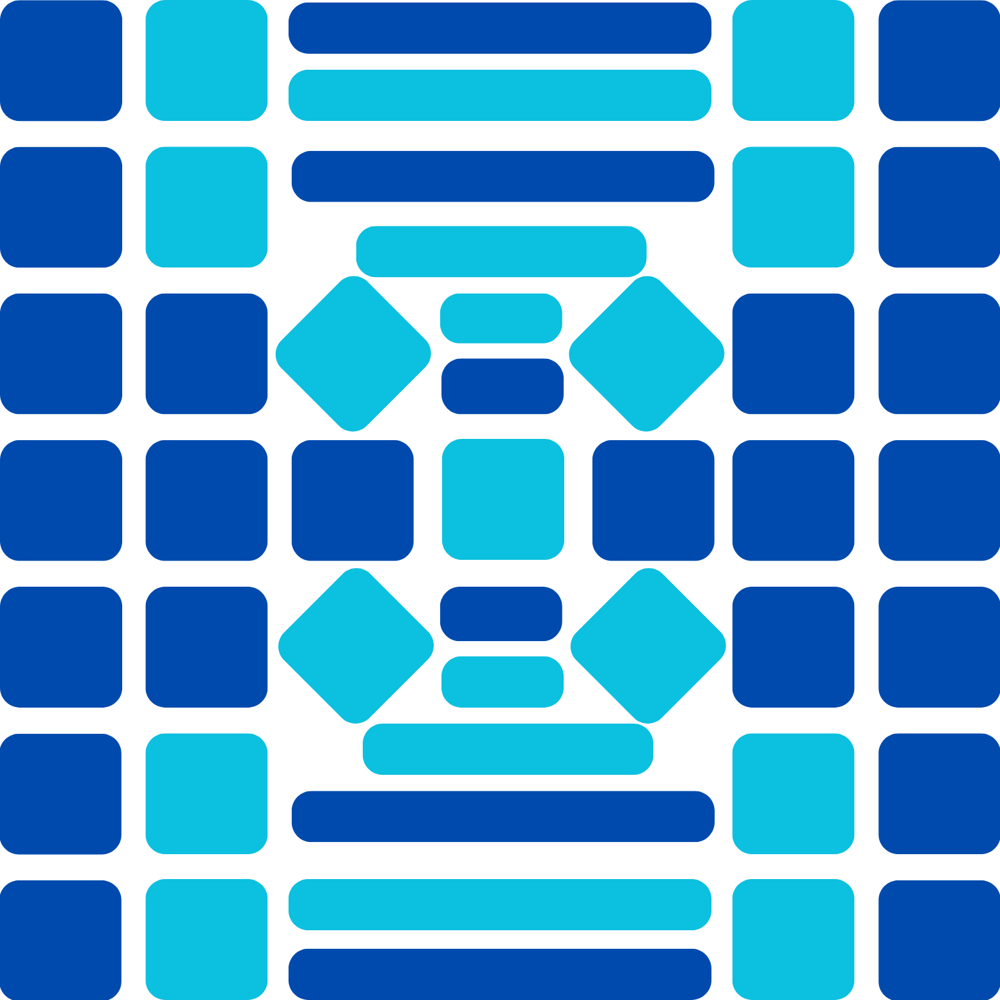
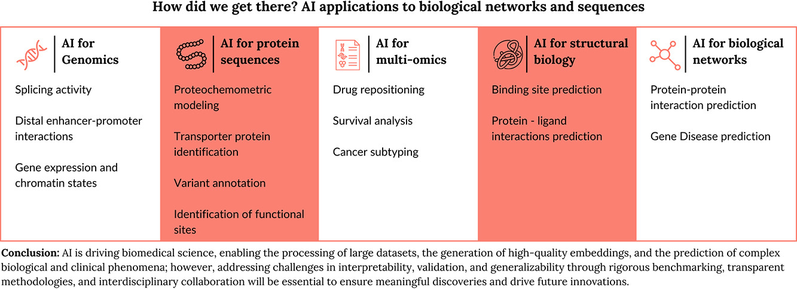
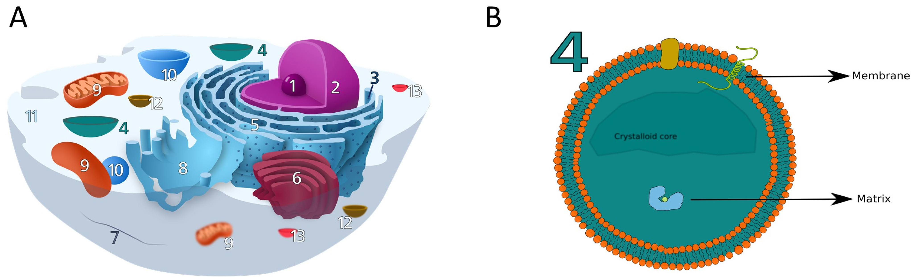
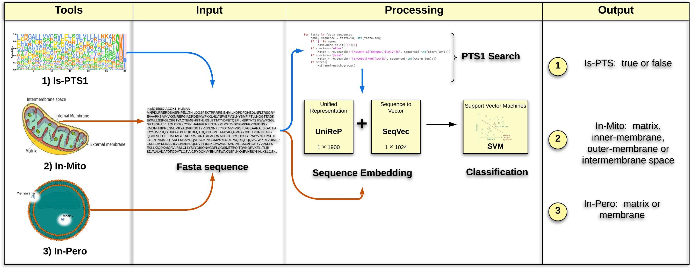
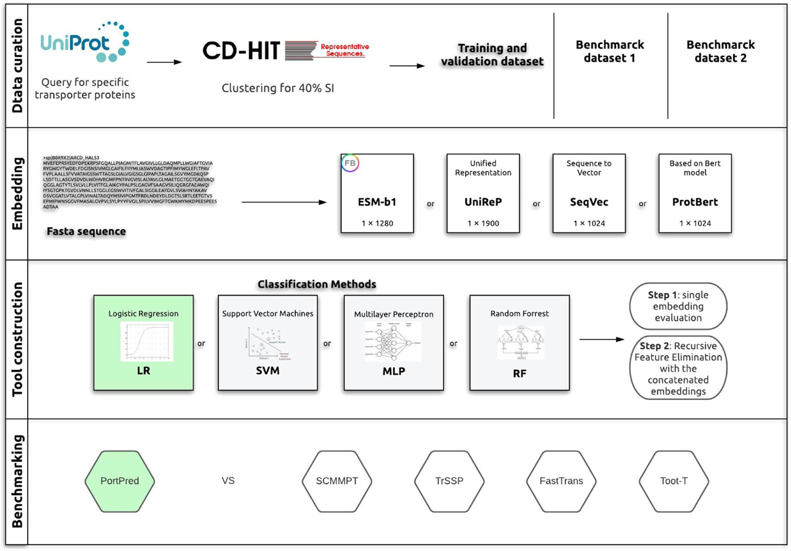
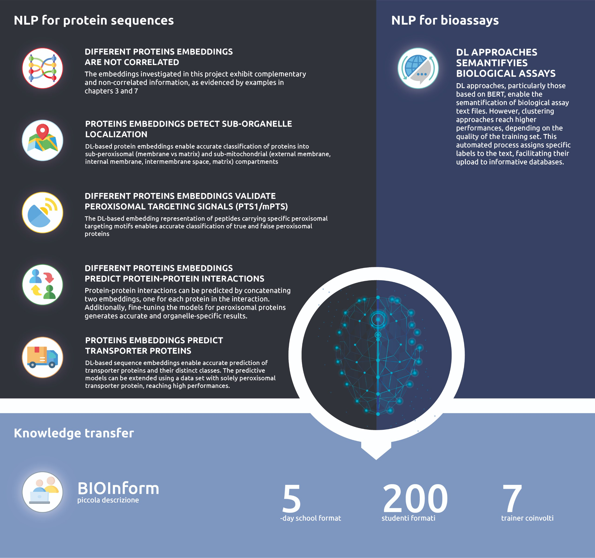

Custom Bioinformatics Pipelines
End-to-end NGS, metagenomics/microbiome, and proteomics workflows: automated, scalable, and reproducible, with QC gates and versioned outputs.

Independent consulting practice of Marco Anteghini, PhDReproducible pipelines. Decision-ready outputs.
Mosaic Bioinformatics turns noisy biological and health data into reliable, reproducible results: custom pipelines, machine-learning models, and clear analysis for life-science research and industry.
Mosaic Bioinformatics is the independent consulting practice of Marco Anteghini, PhD. It delivers end-to-end computational work, from raw sequencing reads and administrative records to validated models and reporting, built to be reproducible, documented, and ready to hand over.
Engagements typically span three domains:
Practical, validated computational work, scoped to your data and built to last beyond the engagement.
End-to-end NGS, metagenomics/microbiome, and proteomics workflows: automated, scalable, and reproducible, with QC gates and versioned outputs.
Models for protein property, variant impact, and risk prediction, using embeddings and protein language models, with explicit validation and failure modes.
SQL/ETL pipelines, cohort and indicator definitions, and reproducible extracts, plus dashboards and publication-ready figures.
Technical contributions and structured documentation for EU-funded consortia and R&D teams, with handover-ready artefacts and traceable decision logs.
Every engagement is grounded in your data and your constraints, then built to be reproducible, validated, and ready to hand over.
Raw sequencing, variant, microbiome, or administrative data, standardised and quality-checked.
Automated, reproducible workflows with QC gates and versioned, traceable outputs.
Machine-learning and embedding-based models, evaluated with explicit failure modes.
Interpretable results, reporting, and documentation ready for operational decisions.
Representative engagements across research and industry. Client identities are kept confidential.
Computational tools and ML workflows for predicting the impact of genetic variants on protein stability, structure, function, and localisation.
Engineering and standardisation of complex administrative and biological datasets, with QC checks and reproducible extracts.
Reproducible pipelines for taxonomic and functional profiling and dysbiosis detection in human gut microbiome data.
Computational biology and decision-support modelling for sustainable bio-manufacturing within EU-funded research consortia.
Academic foundation and applied experience behind the practice.
Deep-learning approaches for protein function, interaction, and localisation.
Strong grounding in molecular biology and computational methods.
H2020 MSCA-ITN fellowship (2018 cohort).
Training schools and materials in bioinformatics and applied AI across Europe.
Conversations at the intersection of biology, data, and industry.
Containerised, versioned, and documented work designed for clean handover.
A selection of published work in bioinformatics and machine learning.

How AI drives biomedical science: processing large datasets and predicting complex phenomena.
View publication
Embedding-based deep learning to predict peroxisomal protein localization with high accuracy.
View publication
Precise sub-organelle protein localization using machine-learning approaches.
View publication
Deep learning for identifying transporter proteins and predicting their substrates.
View publication
Revealing function, interactions, and localization using deep-learning approaches.
View publicationNotes on bioinformatics, machine learning, and reproducible data work, from me and occasional guest contributors.
{% if site.posts.size > 0 %}{{ post.excerpt | strip_html | truncate: 140 }}
Read articleWhether it's a pipeline to build, a model to validate, or a project to support, get in touch to discuss scope, timeline, and how Mosaic can help.